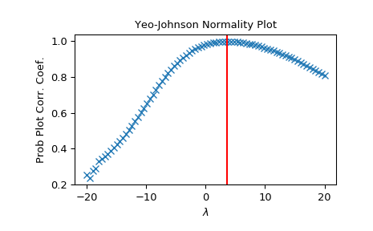

scipy.stats.yeojohnson_normplot¶
-
scipy.stats.yeojohnson_normplot(x, la, lb, plot=None, N=80)[source]¶ Compute parameters for a Yeo-Johnson normality plot, optionally show it.
A Yeo-Johnson normality plot shows graphically what the best transformation parameter is to use in
yeojohnsonto obtain a distribution that is close to normal.- Parameters
- xarray_like
Input array.
- la, lbscalar
The lower and upper bounds for the
lmbdavalues to pass toyeojohnsonfor Yeo-Johnson transformations. These are also the limits of the horizontal axis of the plot if that is generated.- plotobject, optional
If given, plots the quantiles and least squares fit. plot is an object that has to have methods “plot” and “text”. The
matplotlib.pyplotmodule or a Matplotlib Axes object can be used, or a custom object with the same methods. Default is None, which means that no plot is created.- Nint, optional
Number of points on the horizontal axis (equally distributed from la to lb).
- Returns
- lmbdasndarray
The
lmbdavalues for which a Yeo-Johnson transform was done.- ppccndarray
Probability Plot Correlelation Coefficient, as obtained from
probplotwhen fitting the Box-Cox transformed input x against a normal distribution.
See also
Notes
Even if plot is given, the figure is not shown or saved by
boxcox_normplot;plt.show()orplt.savefig('figname.png')should be used after callingprobplot.New in version 1.2.0.
Examples
>>> from scipy import stats >>> import matplotlib.pyplot as plt
Generate some non-normally distributed data, and create a Yeo-Johnson plot:
>>> x = stats.loggamma.rvs(5, size=500) + 5 >>> fig = plt.figure() >>> ax = fig.add_subplot(111) >>> prob = stats.yeojohnson_normplot(x, -20, 20, plot=ax)
Determine and plot the optimal
lmbdato transformxand plot it in the same plot:>>> _, maxlog = stats.yeojohnson(x) >>> ax.axvline(maxlog, color='r')
>>> plt.show()
